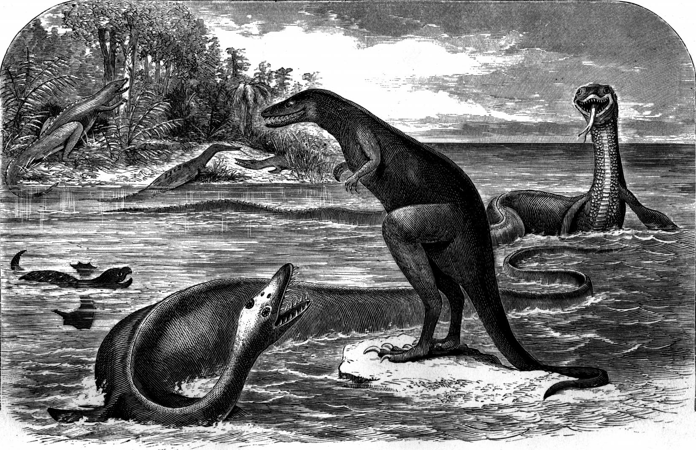
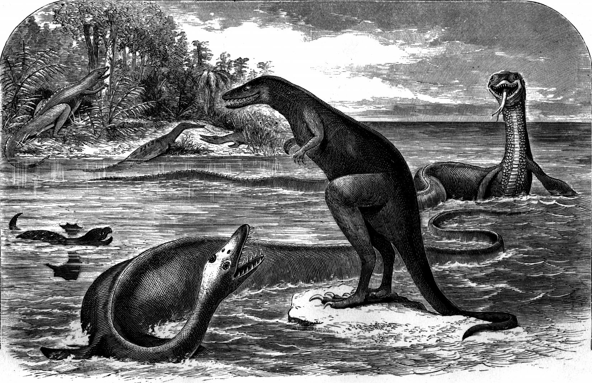

Chronologie
Depuis des milliers d’années, des fossiles de dinosaures sont découverts dans le monde mais ils n’étaient alors pas identifiés comme tels. En Chine, ils sont considérés comme des os de dragons et sont couramment utilisés dans la médecine traditionnelle et en Europe, ils sont généralement reconnus comme les restes de créatures bibliques. Pourtant, c’est bien plus tard, au XIXème siècle que les premiers travaux officiels sont réalisés sur ces créatures. La frise suivante développe l’histoire des dinosaures d’un point de vue scientifique et d’un point de vue paléoartistique.

 



1824
La première espèce de dinosaure est identifiée et décrite scientifiquement par
William Buckland : Megalosaurus (littéralement « grand lézard »). Il décrit une
mâchoire inférieure dans Notice on the Megalosaurus or great Fossil Lizard of
Stonesfield ci-contre.
William Buckland : Megalosaurus (littéralement « grand lézard »). Il décrit une
mâchoire inférieure dans Notice on the Megalosaurus or great Fossil Lizard of
Stonesfield ci-contre.
1837
Le peintre John Martin représente la première toile (aquarelle) de dinosaures :The Country of the Iguanodon. Cette représentation de l’Iguanodon tel Gideon
Mantell le décrit comme les lézards modernes mais démesurés est conservée
jusqu’aux années 1840.
1842
Le mot « dinosaure » apparaît pour la première fois. Sir Richard Owen utiliseen effet le mot « Dinosauria » (du grec « terrible lézard ») pour parler du
super-ordre auxquelles ces créatures appartiennent. Il remet egalement en
question la vision des dinosaures telle qu’elle est à ce moment-là. Plus tard
en 1854, les sculptures grandeur natures de Benjamin Waterhouse Hawkins
viennent proposer un autre modèle pour les dinosaures selon les idées d’Owen
(ci-contre des iguanodons).
A partir de 1850
les recherches des naturalistes particulièrement aux Etats-Unis permettentde mettre à jour la perception des dinosaures. De nombreux fossiles mettent
en évidence le caractère bipède d’un grand nombre d’espèces dont Iguanodon
et les représentations changent en adéquation avec ces découvertes. En 1869,
Edward Drinker Cope propose ainsi une illustration de Dryptosaurus (alors
appelé Laelaps) et semblable à un kangourou dans The Fossil Reptiles of New
Jersey.
1897
Ces développements apportent un regard différent sur les dinosaures. De plusen plus d’espèces sont découvertes et leur diversité apparait. L’image de lézards
lourdauds et passifs s’éloigne au profit de créatures agiles et dynamiques,
ressemblant de plus en plus aux oiseaux ou aux mammifères actuels comme
ci-contre dans Laelaps de Charles R. Knight en 1897.
Début du XXème siècle
un raisonnement est avancé parmi la communauté de paléontologues : si lesdinosaures se sont éteints c’est qu’ils devaient être bêtes et probablement
inférieurs aux espèces actuelles. Ils seraient en soit des échecs de l’évolution.
Charles R. Knight représente Stegosaurus Ungulatus ci-contre, en 1901.
1969
Sous l’impulsion du travail de John Ostrom sur Deinonychus à la fin des années1960, un mouvement appelé la « renaissance des dinosaures » apparaît. C’est
la réouverture de débats sur les connaissances et les représentations les plus
répandues avec par exemple l’apparition de l’idée que les dinosaures aient pu
avoir le sang chaud ce qui en ferait des animaux bien plus actifs. Ci-contre
Coelophysis Group de Douglas Henderson.
A partir des années 1990
des représentations expérimentatrices apparaissent de plus en plus. D’un côtéles scientifiques font de nombreuses découvertes de fossiles à plumes ou à duvet
et poussent des recherches biomécaniques très avancées et d’un autre côté les
paléoartistes spéculent et imaginent ce que l’on ne sait pas encore comme dans
Deinocheirus de Gabriel Ugueto ci-contre. En 1993 sort également le film Jurassic
Park de Steven Spielberg qui démocratise largement les dinosaures.
2015
Jurassic World, la suite de Jurassic Park, sort. Plus que d’être une simple suite,c’est à partir de ce moment qu’explosent sur Internet les mentions de la théorie
selon laquelle les dinosaures n’auraient jamais existé d’après le leader de social
listening Brandwatch. Principal élément mis en cause : la technologie d’image de
synthèse utilisée dans le film a amené certains spectateurs à douter de la véracité
des dinosaures.